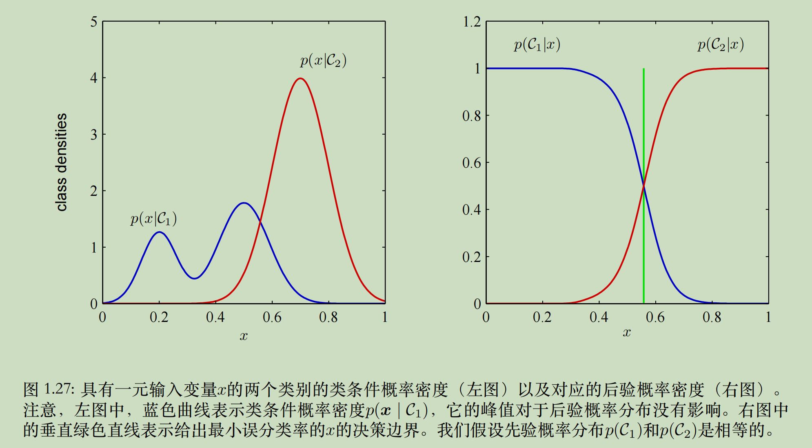

1. 绪论
1.2 概率论
概率的加法公式
概率的乘法公式
贝叶斯公式
1.2.1 概率密度
考虑 $x = g(y)$, 那么 $p_{x}(x)\delta x ≃ p_{y}(y)\delta y$. 从而有：
这里 $p_{x}, p_{y}$ 可以理解为针对随机变量 $x,y$ 的概率密度函数。
连续形式的加法公式
连续形式的乘法公式
1.2.2 期望和协方差
离散和连续形式期望分别定义为：
两种形式下，期望都可以通过采样估计：
多变量函数期望中，可以通过下标指定被平均的是哪个变量。例如下式是关于 $y$ 的函数
方差定义为
变量自身方差
变量 $x$, $y$ 的协方差定义为
它表⽰在多⼤程度上 $x$ 和 $y$ 会共同变化。如果x和y相互独⽴，那么它们的协⽅差为0。
在两个随机向量 $\boldsymbol{}{x}$ 和 $\boldsymbol{}{y}$ 的情形下，协⽅差是⼀个矩阵
考虑 $\boldsymbol{x}$ 各个分量的协方差时，记号可以简化
1.2.3 贝叶斯概率
贝叶斯公式的一个实际意义是，在观测到结果 $\mathcal{D}$ 前，我们对模型参数 $\boldsymbol{}{w}$ 有一个先验估计 $P(\boldsymbol{}{w})$, 观测数据的效果则可以贝叶斯公式表示
我们可以用自然语言描述贝叶斯定理
对上面的贝叶斯公式两边同时积分得到
$p(\mathcal{D}|\boldsymbol{}{w})$ 由结果 $\mathcal{D}$ 来确定，可以看作关于 $\boldsymbol{}{w}$ 的函数。注意：似然函数不是 $\boldsymbol{}{w}$ 的概率分布，并且它关于 $\boldsymbol{}{w}$ 的积分并不（⼀定）等于1。
贝叶斯观点的⼀个优点是对先验概率的包含是很⾃然的事情。
1.2.4 高斯分布
一元和多元高斯分布的定义分别为
我们从均值 $\mu$, 方差 $\sigma^{2}$ 的高斯分布中独立同分布地获取 $N$ 次观测，记为 $\mathbf{x} = \{x_1, \dots, x_N\}^{T}$. 我们已经看到两个独⽴事件的联合概率可以由各个事件的边缘概率的乘积得到。由于我们的数据集 $\mathbf{x}$ 是独⽴同分布的，因此给定 $\mu$ 和 $\sigma^2$, 我们可以给出数据集的概率，同时也是似然函数，为
对数似然函数为
对 $\mu$ 求导，得到 $\mu$ 的最大似然解
同理，对 $\sigma^2$ 求导，得到 $\sigma^2$ 的最大似然解
用 $\mu$ 的最大似然解 $\mu_{ML}$ 替代 $\mu$, 得到
$\mu_{ML}$ 显然是 $\mu$ 的无偏估计；但由于我们在计算 $\sigma^{2}$ 时使用 $\mu_{ML}$ 替代了 $\mu$, 因此 $\sigma_{ML}^2$ 对 $\sigma^{2}$ 的估计是有偏的。
可以使用方差的无偏估计
1.2.5 重新考察曲线拟合问题
曲线拟合的任务目标是根据 $N$ 个输入 $\mathbf{x}=\{x_1,\dots,x_N\}^{T}$ 和对应的目标值 $\mathbf{t}=\{t_1,\dots,t_N\}^{T}$, 在给出输入变量的新值 $x$ 的情况下，对目标变量 $t$ 进行预测。我们假定给定 $x$ 的值，对应的 $t$ 值服从高斯分布。 那么有
其中 $\beta$ 表示精度参数，衡量方差。
已有数据 $\{\mathbf{x},\mathbf{t}\}$ 的似然函数为
对数似然函数为
考虑 $\boldsymbol{}{w}$ 的最大似然解时，首先忽略等式右侧的后两项，而后将 $\frac{\beta}{2}$ 替换为 $\frac{1}{2}$ (因为这不影响最大值出现位置)，最后将“最大化对数似然函数”替换为“最小化负对数似然函数”，我们就得到了平方误差损失函数。 这里不能像计算 $\mu_{ML}$ 一样计算 $\boldsymbol{}{w}_{ML}$ 的解析解，因为我们无法计算 $y$ 对 $\boldsymbol{}{w}$ 的导数。
可以依靠 $\boldsymbol{}{w}_{ML}$ 计算 $\beta_{ML}$ 的最大似然解
考虑引入 $\boldsymbol{}{w}$ 上的先验分布，以一个多元高斯分布为例。
相当于一个各方向 scaling 均为 $\alpha^{-1}$, rotation 为单位矩阵的单位球高斯分布。$M$ 为 $\boldsymbol{}{w}$ (作为多项式函数的系数) 的最高次数。$M+1$ 为 $\boldsymbol{}{w}$ 的维度。
我们可以得到如下关于 $\boldsymbol{}{w}$ 的贝叶斯公式
这称为最大后验 (MAP)。最大化后验概率时，通过最小化负对数后验，等价于最小化下式
这等价使用于 L2 正则项的平方误差损失函数。
1.2.6 贝叶斯曲线拟合
later
1.5 决策论
决策论可以看作概率论的下一步。当概率论给出不确定性后，我们需要一套理论来根据不确定性选出最优的决定。
记 $\boldsymbol{}{x}$ 为我们遇到的情形, $\mathcal{C}_k$ 为我们可以做出的第 $k$ 个决策类。那么
那么如果我们的⽬标是最⼩化把 $x$ 分到错误类别中的可能性，那么我们要选择有最⼤后验概率的类别。
1.5.1 最⼩化错误分类率
我们需要给每一个决策类别划分一个决策区域 $\mathcal{R}_k$. 考虑两个决策类的情形，那么我们犯错误的概率为
那么显然，为了使 $p(\text{mistake})$ 尽量小，我们要将 $\boldsymbol{}{x} 划分到 $ $p(\boldsymbol{}{x}|\mathcal{C}_k)$ 这一后验概率尽量大的类别。
最大化正确分类概率同理
1.5.2 最小化期望损失
有时做出不同错误决策的代价可能不一致，又一些错误决策的代价会明显高于另一些，这时我们可以使用 损失函数 来衡量不同错误决策的代价大小，并借此尽量规避代价更大的错误决策。我们要最小化平均损失，其定义为
我们的目标是对于每个可能的 $\boldsymbol{}{x}$, 选择 $\mathcal{R}_j$ 来使平均损失最小，相当于选择 $\mathcal{R}_j$ 最小化
1.5.3 拒绝选项
值得一提的是，
有时我们不希望在最大的 $p(\mathcal{C}_k|\boldsymbol{}{x})$ 比较小时仍然做出决策，而是希望此时避免进行决策，因此可以选择一个 $\theta\in[0,1]$, 在 $\max_{k}p(\mathcal{C}_k|\boldsymbol{}{x})\leq\theta$ 时拒绝输入 $\boldsymbol{}{x}$. 其很容易扩展到包含损失函数的情形。
1.5.4 推断和决策
我们有三种方法解决决策问题，由复杂到简单分别如下
- 作为一个推断问题，首先确定 $p(\boldsymbol{}{x}|\mathcal{C}_k)$, 并推断先验概率 $p(\mathcal{C}_k)$, 而后通过贝叶斯定理计算后验概率分布；或者直接对联合概率分布 $p(\boldsymbol{}{x}, \mathcal{C}_k)$ 进行建模。这称为 生成式模型, 因为我们可以直接通过采样来 生成新样本。
- 首先通过已有样本对后验概率 $p(\mathcal{C}_k|\boldsymbol{}{x})$ 进行建模学习，然后对新样本进行分类。这称为 判别式模型。
- 找到一个判别函数直接根据输出生成判别的类别。该情况下，概率不起作用。（例如 SVM）
(c) 无法建模后验概率，而我们有许多理由需要后验概率，例如拒绝选项，又例如有时我们有多个条件独立的指标 $\boldsymbol{}{x}_i$, 我们希望联合地进行决策。
(a) 所代表的生成式模型无疑是可以进行决策的，例如 Diffusion Model is Secretly a Zero-Shot Classifier, 但是如果我们只想进行决策，它会严重浪费资源。因为由于 $\boldsymbol{}{x}$ 的维度很高，我们需要大量数据才能确定出类的条件概率密度。另外，类的条件密度（似然函数）可能包含许多对后验概率几乎没有影响的结构（例如概率密度的峰值位置），而如果我们要建模先验分布，这些必需考虑在内。

1.5.5 回归问题的损失函数
对于每个输入 $\boldsymbol{}{x}$, 选择一个对 $t$ 值的估计 $y(\boldsymbol{}{x})$, 造成一个损失 $L(t,y(\boldsymbol{}{x}))$. 那么期望损失是
当我们选择平方损失时，
这里最小化 $\mathbf{E}[L]$ 的方式没看懂，但还有另一种：
对第一项积分
对第二项积分
这里 $\int \mathbb{E}[t|\boldsymbol{}{x}]p(t|\boldsymbol{}{x})dt = \mathbb{E}[t|\boldsymbol{}{x}]\int p(t|\boldsymbol{}{x})dt = \mathbb{E}[t|\boldsymbol{}{x}]$, $\int t p(t|\boldsymbol{}{x})dt = \mathbb{E}[t|\boldsymbol{}{x}]$, 故内层积分为 $0$, 从而第二项积分值为0.
对第三项积分，首先我们有
从而
这里为了最小化第一项的积分，我们需要使 $y(\boldsymbol{}{x}) = \mathbb{E}[t|\boldsymbol{}{x}]$; 第三项积分是无法减小的固有误差。
1.6 信息论
later 先不记了，感觉这部分太复杂，而且不太明白用途是什么